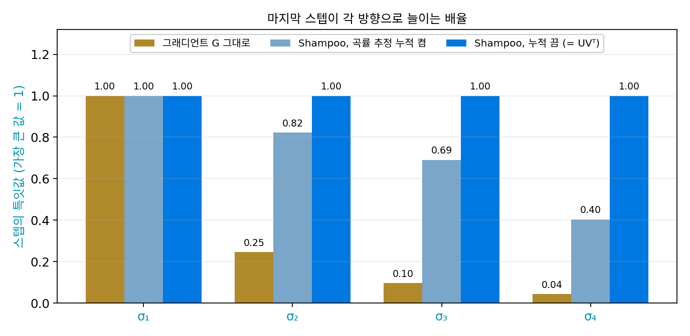
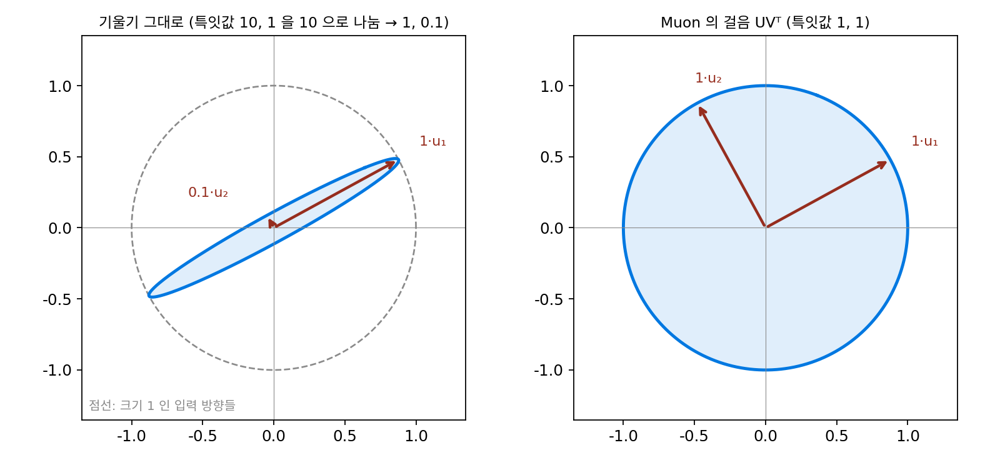
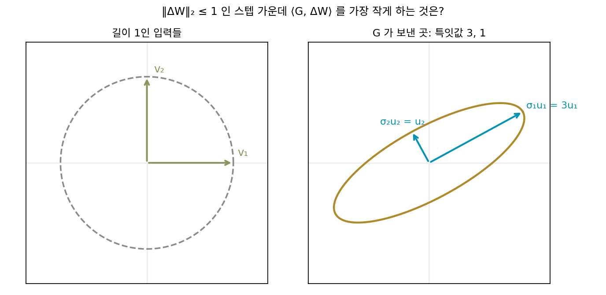
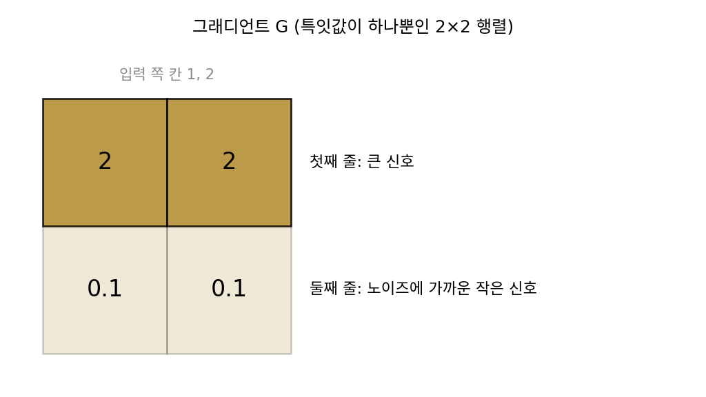

직교화: 스펙트럼 노름 아래 가장 가파른 스텝
최대 노름은 스텝을 숫자 칸의 모음으로 보고 칸마다 상한을 둔다. 그러나 한 층의 가중치 W는 행렬이고, 그 층이 하는 일은 입력 x를 받아 Wx를 내놓는 것이다. 가중치를 ΔW만큼 바꾸면 출력은 ΔWx만큼 바뀐다. 스텝이 「크다」는 것을 「이 층의 출력을 크게 바꾼다」로 읽으면, 스텝의 크기는 칸의 최댓값이 아니라 ΔW가 길이 1인 입력을 가장 크게 늘이는 배율로 재야 한다. 행렬이 길이 1인 입력을 가장 크게 늘이는 배율, 곧 가장 큰 특잇값을 스펙트럼 노름 ‖·‖₂라 했다. 선형층의 립시츠 상수가 바로 이 스펙트럼 노름이었다. 그렇다면 스펙트럼 노름으로 잰 크기가 1 이하인 스텝 가운데 가장 가파른 스텝은 어떤 모양일까?
역사: 볼츠만 기계에서 Shampoo 의 다른 얼굴까지
행렬 파라미터의 스텝을 스펙트럼 노름으로 재자는 생각은 2015년에 이미 논문으로 나왔다. 데이비드 칼슨(David Carlson), 볼칸 제브헤르(Volkan Cevher), 로런스 캐린(Lawrence Carin)은 인공지능·통계 학회(AISTATS)에 「제한 볼츠만 기계를 위한 확률적 스펙트럼 하강」을 냈다. 그들은 제한 볼츠만 기계(보이는 층과 숨은 층을 가중치 행렬 하나로 잇는 옛 생성 모델)의 손실에 상한을 세워 보니 그 상한으로 보면 스텝을 유클리드 노름보다 최대 노름이나 스펙트럼 노름으로 재고 내려가는 편이 유리하다고 보고, 그 노름 아래에서 스텝을 정하는 방법을 냈다. 스텝마다 드는 계산은 조금 늘었지만 확률적 경사하강보다 결과가 크게 나아졌다고 보고했다.
이 생각을 다시 꺼낸 것이 번스타인과 뉴하우스의 2024년 글 「옛 옵티마이저, 새 노름」이다. 이동 평균을 끈 Adam 이 칸마다의 최댓값으로 잰 가장 가파른 스텝이라고 읽은 그 글이다. 그들은 층의 그래디언트 행렬 양쪽에 곡률 추정을 곱해 스텝을 만드는 옵티마이저 Shampoo 가, 그 곡률 추정의 누적을 끄면 스펙트럼 노름 아래의 가장 가파른 스텝이 된다고 보였다. 층마다 그 층이 하는 일에 맞는 노름을 골라야 한다는 주장도 함께 폈다. 스펙트럼 노름 아래의 가장 가파른 스텝을 실제 학습에 쓸 수 있게 만든 켈러 조던(Keller Jordan)은 자기 블로그 글에서, 번스타인이 그보다 몇 달 앞서부터 「스펙트럼 노름 아래의 가장 가파른 내리막」을 이야기해 왔다고 적었다.


2015년에 이미 논문이 있었는데 2024년에야 다시 꺼냈다니, 아홉 해를 묵힌 거네요.

칼슨과 동료들이 다룬 제한 볼츠만 기계는 가중치 행렬 하나짜리 모델이었어요. 스텝마다 그 행렬 하나만 다듬으면 됐죠. 큰 언어 모델이라면요?

층마다 행렬이 여럿이니까… 스텝마다 수십, 수백 개를 다듬어야겠네요. 그래도 GPU 가 있으면 금방 아닌가요?

GPU 는 큰 행렬 곱은 잘하지만, 특잇값 분해에는 하나씩 차례로 계산해야 하는 부분이 많아요. 「스텝마다 계산이 조금 늘었다」는 말의 무게가 행렬 하나일 때와 수백 개일 때 아주 달라요.

Shampoo 는 이미 쓰이던 옵티마이저잖아요. 그 안에 이 스텝이 숨어 있었는데 그동안 안 보였던 거예요?

Shampoo 는 곡률 추정을 누적해 쓰는 방법으로 만들어졌어요. 누적을 끄면 무엇이 남는지 들여다본 것이 2024년 글이고요. 같은 식도 어떤 물음을 들고 보느냐에 따라 보이는 것이 달라요.

그럼 그 물음부터 따라가 봐야겠네요. 스펙트럼 노름으로 크기를 재면, 가장 가파른 스텝은 그래디언트와 무슨 관계일까요?
특잇값이 10, 1, 0.05 인 그래디언트
한 층의 그래디언트 행렬 G를 특잇값 분해로 G = UΣVᵀ로 쪼갰다고 하자. 행렬을 「돌리기 Vᵀ, 축마다 늘이기 Σ, 돌리기 U」로 쪼갠 것이었다. 4×3 그래디언트의 특잇값이 10, 1, 0.05라면(씨앗을 고정한 무작위 방향, sources/muon/s2_spectral.py), 그래디언트는 첫째 특이 방향(V의 첫 열로 들어온 입력을 U의 첫 열로 내보내는 방향)으로 거대하고, 셋째 방향으로는 거의 없다. 이 그래디언트를 가장 큰 특잇값이 1이 되게 줄여 그대로 걸으면, 방향마다 스텝의 크기는 특잇값의 비율을 그대로 따른다. 특잇값을 모두 1로 바꾼 행렬 UVᵀ로 걸으면 세 방향으로 똑같이 간다.
| 특이 방향 | 그래디언트의 특잇값 | 그대로 걷기 (가장 큰 특잇값을 1로) | 특잇값을 모두 1로 (UVᵀ) |
|---|---|---|---|
| 1 | 10 | 1 | 1 |
| 2 | 1 | 0.1 | 1 |
| 3 | 0.05 | 0.005 | 1 |
| 1차 근사로 줄어드는 손실 ⟨G, ·⟩ | 10.1002 | 11.0500 |
두 스텝 모두 스펙트럼 노름은 1이다. 그대로 걷기는 셋째 방향에 스텝의 0.005만 쓰고, 둘째 방향에도 0.1만 쓴다. 스펙트럼 노름의 규칙은 「어느 방향으로도 1배를 넘게 늘이지 말라」였으니, 둘째·셋째 방향은 1배까지 움직일 수 있는데 0.1배, 0.005배만 쓰고 나머지 폭을 남긴 것이다. 칸의 최댓값으로 잴 때 그래디언트 반대쪽 스텝이 둘째 칸에 허락된 폭을 절반만 썼던 것과 같은 모양이다. 특잇값을 모두 1로 바꾸면 세 방향에 허락된 폭을 모두 쓰고, 1차 근사로 줄어드는 손실이 10.10에서 11.05로 늘어난다. 줄어든 양 11.05는 특잇값의 합 10 + 1 + 0.05다.

일반적으로, 스펙트럼 노름으로 잰 크기가 η 이하인 스텝 가운데 손실을 1차 근사로 가장 많이 줄이는 스텝은 다음과 같다.
특잇값 분해에서 늘이기 Σ만 빼고 두 돌리기를 남긴 것이다. 그래디언트가 「어느 방향으로」 손실을 줄이라고 하는지는 남기고, 「그 방향으로 얼마나 세게」는 지운다. 특잇값이 모두 1인 행렬은 길이를 바꾸지 않고 돌리기만 하는 행렬(정사각형이면 직교 행렬)이므로, 그래디언트를 UVᵀ로 바꾸는 일을 직교화 (특잇값을 모두 1로 바꾸기 / orthogonalization)라 한다. 최대 노름 아래에서 칸마다 크기를 지우고 부호만 남긴 것을, 스펙트럼 노름 아래에서는 특이 방향마다 크기를 지우고 방향만 남기는 것으로 바꾼 것이다. 왜 이것이 가장 가파른지는 아래 문제 4에서 증명한다.
ML에서: 은닉층의 2차원 가중치에만
직교화한 스텝 −UVᵀ를 학습에 쓰려면 정해야 할 것이 있다. 특잇값은 행렬에만 있으므로, 바이어스(층에서 더하는 b)처럼 숫자 한 줄로 된 파라미터에는 직교화를 할 수 없다. 2차원 가중치라도 층이 하는 일이 다르면 맞는 노름이 다르다. 입력 단어를 벡터로 바꾸는 임베딩 층은 입력이 한 칸만 1인 벡터(원-핫 벡터)라서, 한 번에 행렬의 한 열만 쓰인다. 이런 층의 스텝은 열마다 따로 재는 편이 맞다는 이론이 있고, 실제 구현은 임베딩과 마지막 출력층을 AdamW 로 학습하고 은닉층의 2차원 가중치만 직교화한다. 출력층을 AdamW 로 두는 것은 이론에서 나온 것이 아니라 실험으로 정한 것이라고 켈러 조던은 적었다. 층마다 무엇을 하는지 보고 노름을 고른다는 번스타인과 뉴하우스의 주장이 실제 설정에서는 이런 모습이다. 같은 그래디언트에서 Adam 의 스텝과 직교화한 스텝이 무엇을 다르게 하는지는 아래 문제 5에서 견준다.
문제 4. 스펙트럼 노름 아래 가장 가파른 스텝
그래디언트 행렬 G = UΣVᵀ가 주어졌다. (가) 특잇값이 3, 1인 2×2 그래디언트에서 세 후보 −G/‖G‖₂, −G/‖G‖F(‖·‖F는 칸 제곱합의 제곱근), −UVᵀ가 모두 ‖ΔW‖₂ ≤ 1을 지키는지 확인하고 ⟨G, ΔW⟩를 비교하라. (나) 일반적으로 ‖ΔW‖₂ ≤ 1인 ΔW 가운데 ⟨G, ΔW⟩를 가장 작게 하는 것이 −UVᵀ임을 보여라.

세 후보가 규칙을 지키는지부터 볼게요. −G/‖G‖₂는 스펙트럼 노름이 정확히 1이고, −G/‖G‖F는 3/√10 = 0.95, −UVᵀ는 특잇값이 모두 1이라 1이에요. 셋 다 지켜요.
내적은 내가 해 볼게. ⟨G, −G/‖G‖₂⟩ = −‖G‖F²/σ₁ = −(9 + 1)/3 = −3.33이고, −G/‖G‖F는 −‖G‖F = −3.16이야.
−UVᵀ를 넣으면 −tr(VΣUᵀUVᵀ) = −tr(Σ) = −(3 + 1) = −4야. σ₁이 가장 크니까 Σσᵢ ≥ Σσᵢ²/σ₁이고, 늘 −UVᵀ가 이겨.
스펙트럼 노름이 1인 무작위 행렬을 20만 개 뽑아 봤는데 가장 작은 내적이 −3.985예요. −4 바로 위에서 멈춰요.
서연 학생, −UVᵀ가 정말 가장 작다는 건 어떻게 보장해요?

음… ΔW의 특잇값이 다 1 이하면 tr(GᵀΔW) ≥ −Σσᵢ라는 걸 보여야 해요. 코시–슈바르츠로 하면 |tr(GᵀΔW)| ≤ ‖G‖F‖ΔW‖F인데, ‖ΔW‖F가 √2까지 커질 수 있어서 경계가 느슨해요. 이 방식으로는 Σσᵢ가 안 나와요.
대각합을 G의 특이 방향으로 풀어 써 봐요.
tr(GᵀΔW) = tr(VΣUᵀΔW) … 대각합은 순서를 돌려도 되니까 Σᵢ σᵢ·(uᵢᵀΔWvᵢ)요. 특잇값마다 한 항씩 나왔어요.
괄호 안의 uᵢᵀΔWvᵢ는 얼마까지 될 수 있죠?
길이 1인 두 벡터 사이에 끼웠으니까, 절댓값이 ‖ΔW‖₂ ≤ 1을 넘을 수 없어요. 그럼 항마다 −σᵢ 이상이고, 전체는 −Σσᵢ 이상이에요.
등호는 언제야?
모든 i에서 uᵢᵀΔWvᵢ = −1일 때. ΔW = −UVᵀ가 그래.

특이 방향마다 따로 「최대 1」이 걸려 있으니까, 방향마다 1씩 다 쓰는 게 최선이에요. 최대 노름에서 칸마다 1씩 다 쓰던 부호 하강을 특잇값 위로 옮긴 거네요. 선형대수 시간에 「ℓ∞의 쌍대 노름은 ℓ₁」을 배웠는데, 행렬에서는 「가장 큰 특잇값(스펙트럼 노름)의 쌍대 노름은 특잇값의 합」이에요.

보너스 문제랑 같은 거네요. 사람 대신 특이 방향이고, 「한 사람당 최대 1점」 대신 「방향마다 최대 1배」고요. 그러니 기여한 방향마다 1씩 주는 게 총점이 크고요.
문제 5. Adam 의 스텝과 직교화한 스텝, 어느 쪽이 더 가파른가
예제 하나에서 나온 선형층의 그래디언트는 (출력 쪽 벡터)×(입력 쪽 벡터)ᵀ 꼴이라 특잇값이 하나뿐이다. 그런 그래디언트 G = [[2, 2], [0.1, 0.1]]을 생각한다(둘째 줄은 노이즈에 가까운 작은 신호다). (가) 이동 평균을 끈 Adam 의 스텝 −sign(G)와 직교화한 스텝 −UVᵀ를 구하라. (나) 두 스텝을 스펙트럼 노름이 1이 되게 맞췄을 때와, 가장 큰 칸이 1이 되게 맞췄을 때 각각 ⟨G, ΔW⟩를 비교하라. (다) 둘째 줄을 두 스텝은 어떻게 다르게 다루는가?

바로 앞 문제에서 −UVᵀ가 가장 가파르다는 걸 증명했으니까, 직교화가 늘 Adam 보다 손실을 더 줄이겠죠.
(가)의 두 스텝부터 적어 봐요.
sign(G)는 칸이 다 양수라 [[1, 1], [1, 1]]. UVᵀ는 특잇값이 하나뿐이라 G를 자기 특잇값으로 나눈 거고요. 특잇값이 √(2² + 2² + 0.1² + 0.1²) = 2.832라 [[0.706, 0.706], [0.035, 0.035]].

내적은 −sign 쪽이 −(2 + 2 + 0.1 + 0.1) = −4.2, −UVᵀ 쪽이 −2.832. 어? Adam 이 더 가파른데요.
두 스텝의 크기가 같았나요?
sign(G)의 스펙트럼 노름은… 칸이 모두 1인 2×2 행렬은 (1, 1) 방향 입력을 두 배로 늘이니까 2야. 크기가 두 배였네.
그럼 스펙트럼 노름을 1로 맞추면요?
반으로 줄이니까 −2.1이요. 직교화의 −2.832보다 덜 가팔라요.
반대로 가장 큰 칸을 1로 맞추면? UVᵀ를 0.706으로 나눠서 −4.010이고, Adam 이 −4.2로 이기네.

어느 노름으로 「같은 크기」를 재느냐에 따라 승자가 바뀌네요. 스펙트럼 노름으로 재면 직교화가, 칸의 최댓값으로 재면 Adam 이 가장 가파르고요. 보너스 문제에서 규칙이 바뀌면 최선의 분배가 바뀐 거랑 같아요.
둘째 줄의 0.1이 노이즈라면, 두 스텝은 그 노이즈를 어떻게 다뤄요?
Adam 은 둘째 줄도 첫째 줄과 똑같이 1만큼 움직여요. 첫째 줄의 20분의 1이던 신호를 첫째 줄과 같은 크기로, 스무 배 키운 거예요.
직교화는 0.035니까 첫째 줄의 20분의 1 그대로네.
왜 그대로일까요?

직교화는 특이 방향마다 크기를 맞추지 칸마다 맞추지 않으니까, 한 방향 안에서 칸끼리의 비율은 지켜요.
그래서 「어느 옵티마이저가 더 좋으냐」는 물음은 「층마다 어떤 노름으로 재는 게 맞느냐」로 바뀌어요. 은닉층처럼 입력 벡터를 받아 출력 벡터로 바꾸는 층이라면, 출력이 얼마나 바뀌는지를 재는 스펙트럼 노름이 그 층의 일에 맞는 자라는 거죠.